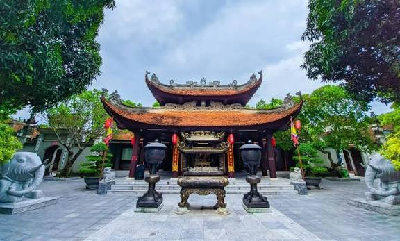
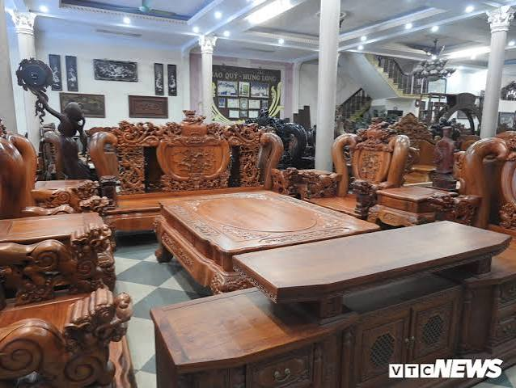
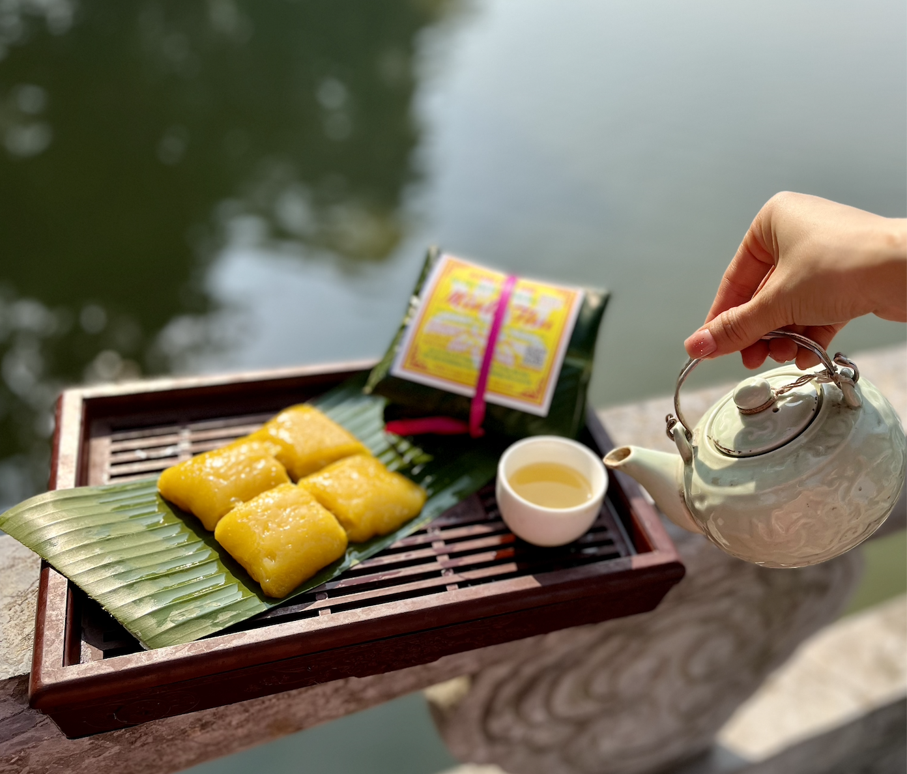

Tổng Quan & Sự Phát Triển Hiện Nay
Thành phố Từ Sơn nằm ở cửa ngõ phía Tây của tỉnh Bắc Ninh, tiếp giáp trực tiếp với thủ đô Hà Nội. Đây là vùng đất "địa linh nhân kiệt", cái nôi của văn hóa Kinh Bắc cổ kính và là quê hương phát tích của triều đại nhà Lý - triều đại mở ra thời kỳ văn minh Đại Việt rực rỡ.
Sự bứt phá của thành phố trẻ hiện đại
Không chỉ giữ gìn vẹn nguyên các giá trị lịch sử, Từ Sơn ngày nay đã bứt phá trở thành một trong những đô thị trẻ phát triển năng động nhất vùng kinh tế trọng điểm Bắc Bộ. Với tốc độ đô thị hóa nhanh chóng và hạ tầng công nghệ cao, Từ Sơn đã thu hút hàng loạt khu công nghiệp lớn như KCN VSIP Bắc Ninh, KCN Tiên Sơn.
Bộ mặt đô thị thay đổi từng ngày với các khu đô thị sinh thái hiện đại, trung tâm thương mại sầm uất và giao thông đồng bộ. Sự hòa quyện giữa dòng chảy công nghiệp và bản sắc văn hóa truyền thống đã tạo nên một Từ Sơn độc đáo, giàu lòng mến khách.
Hành Trình Di Tích Lịch Sử & Làng Nghề

Đền Đô - Nơi Hội Tụ Linh Khí Triều Lý
Tọa lạc tại phường Đình Bảng, Đền Đô (Đền Lý Bát Đế) là công trình kiến trúc lịch sử vĩ đại, nơi thờ tự 8 vị vua anh minh của vương triều nhà Lý. Kiến trúc đền là sự kết hợp tinh xảo giữa nghệ thuật cung đình và dân gian với các hạng mục nổi tiếng như Cổng Ngũ Long Môn, Cổ Pháp Điện và hồ bán nguyệt lộng gió.

Làng Nghề Đồ Gỗ Mỹ Nghệ Đồng Kỵ, Phù Khê
Nội tiếng khắp cả nước và quốc tế, làng nghề gỗ mỹ nghệ Đồng Kỵ, Phù Khê có lịch sử hàng trăm năm chạm khắc thủ công trên các loại gỗ quý hiếm. Mỗi sản phẩm từ bàn ghế, tranh phong thủy đều đạt đến độ tinh xảo tuyệt mỹ nhờ bàn tay khéo léo của người thợ địa phương, mang lại nguồn kinh tế vững chắc cho thành phố.
Di Sản Văn Hóa & Ẩm Thực Đặc Sắc
Dân Ca Quan Họ Bắc Ninh (UNESCO)
Dân ca Quan họ là Kiệt tác di sản văn hóa phi vật thể của nhân loại. Những làn điệu mượt mà, đằm thắm vang - rền - nền - nẩy thể hiện nét văn hóa ứng xử lịch sự, trọng nghĩa tình và vô cùng mến khách của con người xứ Bắc.
Đặc Sản Bánh Phu Thê Đình Bảng

Món bánh truyền thống gắn liền với giai thoại tình nghĩa vợ chồng son sắt. Bánh có lớp vỏ màu vàng trong suốt làm từ bột nếp và quả dành dành, gói gọn nhân đậu xanh bùi bùi, dừa nạo và hạt sen dẻo thơm dẻo quánh bên trong.